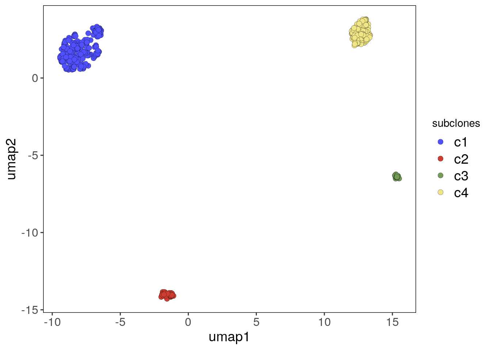
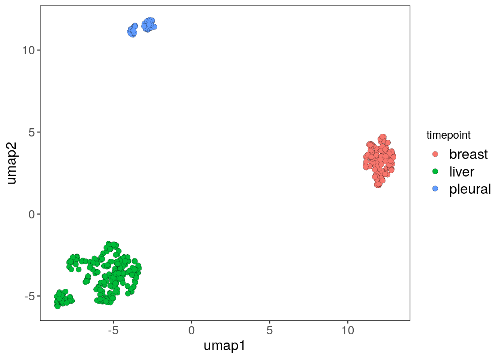
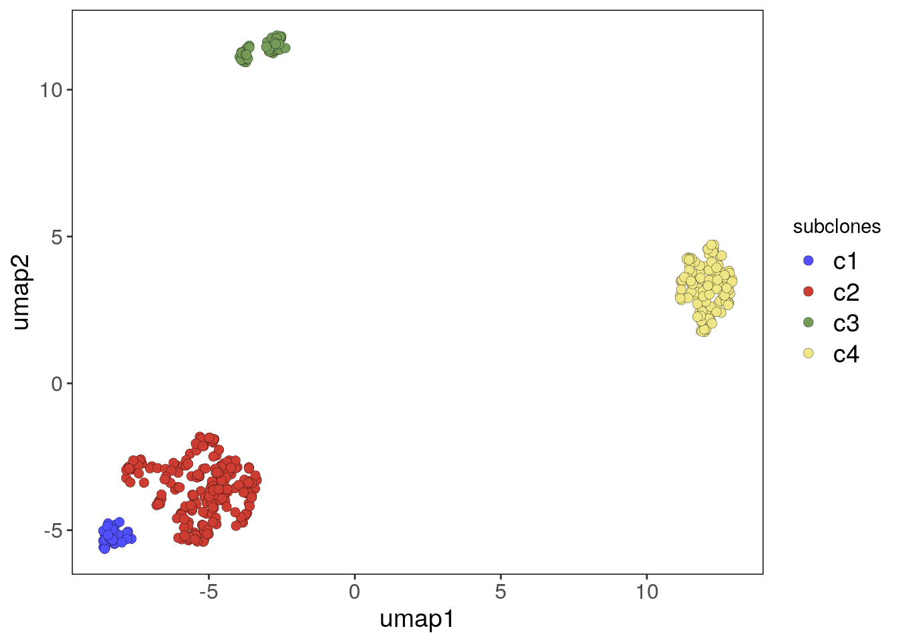
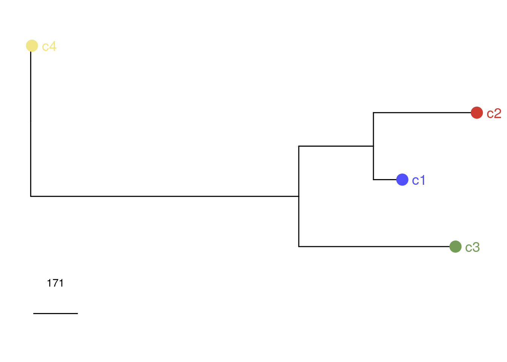
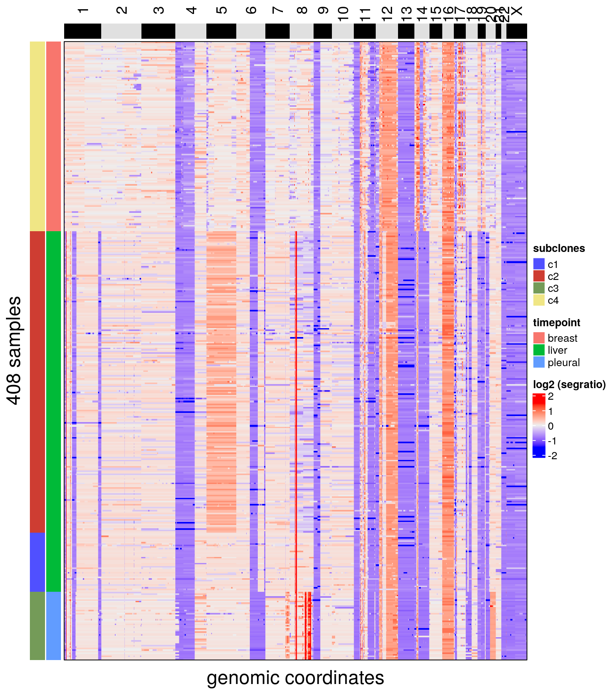

3 BM1
3.1 Reading datasets
# Running data with CopyKit for the primary breast sample
bm1_breast <-
runVarbin(
"/mnt/lab/users/dminussi/projects/CopyKit_Manuscript_Code/datasets/BM1/breast/marked_bams/",
remove_Y = TRUE
)## Counting reads for genome hg38 and resolution: 220kb## 326 bam files had less than 10 mean bincounts and were removed.## Performing GC correction.## Smoothing bin counts.## Running segmentation algorithm: CBS for genome hg38## Merging levels.## Done.# Finding diploid and low-quality cells and excluding it from the copykit object
bm1_breast <- findOutliers(bm1_breast, resolution = 0.8)## Calculating correlation matrix.## Marked 288 cells as outliers.## Adding information to metadata. Access with colData(scCNA).## Done.bm1_breast <- findAneuploidCells(bm1_breast)## number of iterations= 25## Copykit detected 83 that are possibly diploid cells using a resolution of: 0.052## Added information to colData(CopyKit).bm1_breast <- bm1_breast[, colData(bm1_breast)$outlier == FALSE]
bm1_breast <- bm1_breast[, colData(bm1_breast)$is_aneuploid == TRUE]
# Adding the tissue information to colData
colData(bm1_breast)$timepoint <- 'breast'
# ~~~~~~~~~~~~~~~~~~~~~~~
# Running data with CopyKit for the liver metastasis sample
bm1_liver <-
runVarbin(
"/mnt/lab/users/dminussi/projects/CopyKit_Manuscript_Code/datasets/BM1/liver/marked_bams/",
remove_Y = TRUE
)## Counting reads for genome hg38 and resolution: 220kb## 40 bam files had less than 10 mean bincounts and were removed.## Performing GC correction.## Smoothing bin counts.## Running segmentation algorithm: CBS for genome hg38## Merging levels.## Done.# Finding diploid and low-quality cells and excluding it from the copykit object
bm1_liver <- findOutliers(bm1_liver)## Calculating correlation matrix.## Marked 295 cells as outliers.## Adding information to metadata. Access with colData(scCNA).## Done.bm1_liver <- findAneuploidCells(bm1_liver)## number of iterations= 15## Copykit detected 284 that are possibly diploid cells using a resolution of: 0.051## Added information to colData(CopyKit).bm1_liver <- bm1_liver[, colData(bm1_liver)$outlier == FALSE]
bm1_liver <- bm1_liver[, colData(bm1_liver)$is_aneuploid == TRUE]
# Adding the tissue information to colData
colData(bm1_liver)$timepoint <- 'liver'
# Running data with CopyKit for the pleural effusion metastasis sample
bm1_pleural <-
runVarbin(
"/mnt/lab/users/dminussi/projects/CopyKit_Manuscript_Code/datasets/BM1/pleural/marked_bams/",
remove_Y = TRUE
)## Counting reads for genome hg38 and resolution: 220kb## 33 bam files had less than 10 mean bincounts and were removed.## Performing GC correction.## Smoothing bin counts.## Running segmentation algorithm: CBS for genome hg38## Merging levels.## Done.# Finding diploid and low-quality cells and excluding it from the copykit object
bm1_pleural <- findOutliers(bm1_pleural)## Calculating correlation matrix.## Marked 106 cells as outliers.## Adding information to metadata. Access with colData(scCNA).## Done.bm1_pleural <- findAneuploidCells(bm1_pleural)## number of iterations= 14## Copykit detected 228 that are possibly diploid cells using a resolution of: 0.048## Added information to colData(CopyKit).bm1_pleural <- bm1_pleural[, colData(bm1_pleural)$outlier == FALSE]
bm1_pleural <-
bm1_pleural[, colData(bm1_pleural)$is_aneuploid == TRUE]
# Adding the tissue information to colData
colData(bm1_pleural)$timepoint <- 'pleural'Merging the three datasets
# Merging the three copykit objects
bm1_merged <- cbind(bm1_breast,
bm1_liver,
bm1_pleural)From here on the analysis follow the same steps as a standard CopyKit workflow analysis.
3.2 Running UMAP and Clustering
bm1_merged <- runUmap(bm1_merged)## Using assay: logr## Embedding data with UMAP. Using seed 17## Access reduced dimensions slot with: reducedDim(scCNA, 'umap').## Done.bm1_merged <- findSuggestedK(bm1_merged)## Calculating jaccard similarity for k range: 10 11 12 13 14 15 16 17 18 19 20 21## ## Suggested k = 12 with median jaccard similarity of: 0.99bm1_merged_suggestedk <- plotSuggestedK(bm1_merged)
bm1_merged_suggestedkbm1_merged <- findClusters(bm1_merged)## Using suggested k_subclones = 12## Finding clusters, using method: hdbscan## Found 4 subclones.## Done.bm1_merged <- calcConsensus(bm1_merged)
bm1_merged <- runConsensusPhylo(bm1_merged)
plotHeatmap(bm1_merged, label = c('subclones', 'timepoint'))## Plotting Heatmap.## The automatically generated colors map from the minus and plus 99^th of the absolute values in
## the matrix. There are outliers in the matrix whose patterns might be hidden by this color
## mapping. You can manually set the color to `col` argument.
##
## Use `suppressMessages()` to turn off this message.
bm1_merged_umap_p <- plotUmap(bm1_merged, label = 'subclones')## Plotting Umap.## Coloring by: subclones.bm1_merged_umap_p
# Cluster c3 from the pleural sample is a cluster of tumor-normal doublets
# We can subset out of the CopyKit object in a similar way to the filtering
# functions with the information from colData
bm1_merged <- bm1_merged[, colData(bm1_merged)$subclones != 'c3']
# Re-clustering the sample after doublet removal
# This sample has a smaller sample size, therefore we are reducing the
# n_neighbors parameter from the UMAP and increasing min_dist
bm1_merged <- runUmap(bm1_merged, n_neighbors = 10, min_dist = 0.1)## Using assay: logr## Embedding data with UMAP. Using seed 17## Access reduced dimensions slot with: reducedDim(scCNA, 'umap').## Done.# Grid Search of Jaccard Similarity (cluster stability)
bm1_merged <- findSuggestedK(bm1_merged)## Calculating jaccard similarity for k range: 10 11 12 13 14 15 16 17 18 19 20## ## Suggested k = 15 with median jaccard similarity of: 0.988bm1_merged <- findClusters(bm1_merged)## Using suggested k_subclones = 15## Finding clusters, using method: hdbscan## Found 4 subclones.## Done.# Plotting the UMAP colored by the tissue of origin from the colData information
bm1_merged_tp_umap_p <- plotUmap(bm1_merged, label = 'timepoint')## Plotting Umap.## Coloring by: timepoint.bm1_merged_tp_umap_p
# Plotting the UMAP colored by the subclones from the colData information
bm1_merged_umap_p <- plotUmap(bm1_merged, label = 'subclones')## Plotting Umap.## Coloring by: subclones.bm1_merged_umap_p
3.3 Consensus tree
To root the tree, we will use an inferred Most Recent Common Ancestral from the primary tumor and provide that as an argument to the runConsensusPhylo function. This consensus tree will be used by plotHeatmap to order the subclones on the plot
# The primary sample per se has very few cells so we will add a subclone
# information to the colData to use the later inferMrca function in CopyKit
colData(bm1_breast)$subclones <- 'c1'
bm1_breast <- calcConsensus(bm1_breast)
# Inferring the MRCA on the primary breast sample
bm1_breast <- inferMrca(bm1_breast)
# calculating the consensus of the Merged dataset and using the inferred
# primary MRCA as the root of the tree
bm1_merged <- calcConsensus(bm1_merged)
bm1_merged <- runConsensusPhylo(bm1_merged,
root = 'user',
root_user = metadata(bm1_breast)$inferred_mrca)
# Rotating branches
consensusPhylo(bm1_merged) <-
ape::rotate(consensusPhylo(bm1_merged), 6)
bm1_merged_consensus_phylo <-
plotPhylo(bm1_merged, label = 'subclones', consensus = TRUE)
bm1_merged_consensus_phylo
# Calculating cophenetic distances between subclones
ape::cophenetic.phylo(consensusPhylo(bm1_merged))## c1 c2 c3 c4
## c1 0.0000 507.340 998.2312 1430.255
## c2 507.3400 0.000 1284.0087 1716.032
## c3 998.2312 1284.009 0.0000 1634.176
## c4 1430.2550 1716.032 1634.1762 0.000# Plotting the copy number heatmap with annotation data from the subclones and
# the tissue of origin
plotHeatmap(bm1_merged, label = c('subclones', 'timepoint'))## Plotting Heatmap.
# Plotting a consensus heatmap with the plotHeatmap function.
# The annotation represents the subclones and relevant cancer genes are marked.
plotHeatmap(
bm1_merged,
label = 'subclones',
consensus = TRUE,
genes = c(
"MYC",
"MYB",
"BRCA1",
"ERBB2",
"CDH1",
"FGFR1",
"AKT2",
"CDK4",
"CCNE1",
"CCND1",
"MTOR",
"FGF10",
"BRAF",
"AURKA"
)
)## Plotting Heatmap.## The automatically generated colors map from the minus and plus 99^th of the absolute values in
## the matrix. There are outliers in the matrix whose patterns might be hidden by this color
## mapping. You can manually set the color to `col` argument.
##
## Use `suppressMessages()` to turn off this message.
# Using the plotGeneCopy function to plot the segment ratios mean values for
# the selected genes and coloring it by the tissue of origin from the metadata
bm1_merged_gc <-
plotGeneCopy(
bm1_merged,
genes = c(
"MYC",
"MYB",
"BRCA1",
"ERBB2",
"CDH1",
"FGFR1",
"AKT2",
"CDK4",
"CCNE1",
"CCND1",
"MTOR",
"FGF10",
"BRAF",
"AURKA"
),
label = 'timepoint',
dodge.width = .8
) +
scale_fill_hue()## Coloring by: timepoint## Scale for 'fill' is already present. Adding another scale for 'fill', which will replace the existing
## scale.bm1_merged_gc